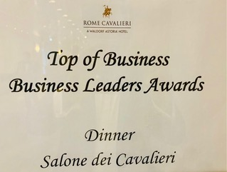
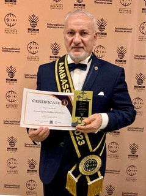
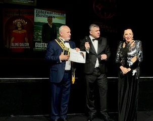
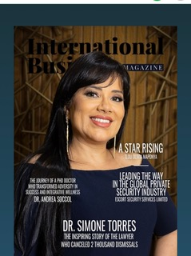

Новый амбасадор науки!
В сердце солнечной Италии, в отеле Rome Cavalieri, расположенном посреди большого средиземноморского сада на вершине холма Монте-Марио с видом на Рим и Ватикан, 18-19 августа 2023 года состоялась ежегодная встреча ведущих представителей бизнеса, награждение бизнес-лидеров и торжественный ужин в салоне Кавальери.

Ибадов Яшар был избран Амбассадором Международного Института Бизнеса 2023-го года.

Академик Яшар Ибадов — психолог, биорадиолог, автор новой науки Альтернативная Психология, кандидат медико-психологических наук, доктор медико-биологических наук, профессор, академик Международной академии семейной медицины, нетрадиционных и природных методов лечения (г. Москва), Генеральный директор медико-психологического центра «Яшадан Эллер» («Целительные руки», г. Баку), заведующий лабораторией «Психогигиены и медико-психологической диагностики», функционирующей в институте проблем образования Министерства образования Азербайджана, почетный академик в 5-ти странах и действительный член 3-х академий разных стран мира, кандидат на Нобелевскую премию мира.
На Бизнес-ассамблее в Италии Я. Ибадов представил новую науку, автором которой он является, и изобретения, разработанные на её основе. Авторское право на новый научный подход, названный «Альтернативная Психология», зарегистрировано Российским авторским обществом в реестре за № 6274 от 3 марта 2003 года. В ходе научных исследований и практического применения методов Альтернативной Психологии разработан «Способ Я. Ибадова энергоинформационной диагностики и лечения». На изобретение получен Евразийский патент за № 006449 от 29 декабря 2005г.
Представители Международного Института Бизнеса и гости Бизнес-ассамблеи получили возможность ознакомиться с теоретическими основами нового научного направления и его техническим воплощением в приборах и гармонизаторах, способствующих восстановлению здоровья, его поддержанию, улучшению качества жизни и обретению здорового долголетия.

Изобретения Я. Ибадова в виде пространственных и временных гармонизаторов, кулонов и значков, наклеек с символами Яй-Осидо, песочных часов и наручных часов Яй- Осидо – с движением стрелок как по часовой, так и против часовой стрелки, очков с цветными многофункциональными и солнцезащитными линзами, с вписанными в них символами Яй-Осидо – получили высокую оценку представителей бизнеса.

В ежемесячном журнале «Международный Бизнес» опубликована статья «Нанотехнологии в Альтернативной Психологии», из которой можно узнать об авторе нового научного направления академике Яшаре Ибадове, о самой науке «Альтернативная Психология» и её методе Психографии, о новых технологиях, достижениях и изобретениях в данной сфере.
{kind=link}
В ходе работы Бизнес-ассамблеи Я. Ибадов получил заказы от представителей разных стран на создание Фазовых портретов их бизнеса. Также был заключен договор о научном сотрудничестве академика Я. Ибадова с Международным Институтом Бизнеса.
Амбассадор МИБ – Я. Ибадов получил приглашение в США, Бразилию, Канаду и другие страны, принявшие участие в Бизнес-ассамблее 2023 года. Желаем Яшару Ибадову плодотворного сотрудничества!!!